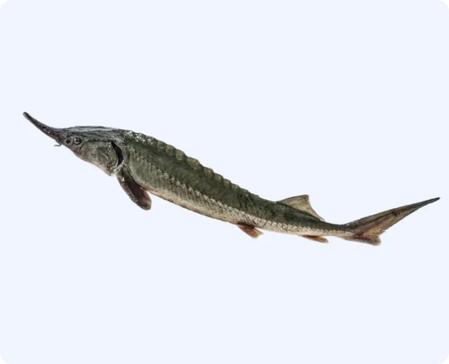

Рыба для пруда
Осетр роло
Цена и наличие
- 8-15 см18 BYN / шт.В наличии
- 15-20 см24 BYN / шт.В наличии
- 20-30 см30 BYN / шт.В наличии
- 30-50 см38 BYN / шт.В наличии
Данные на 23.11.2026.
Характеристики
- Внешний вид
- Тело длинное, стройное и покрыто рядами костных пластин
- Сезонность
- Апрель-май
- Возраст
- Сеголетки, годовики
- Максимальный вес
- Точный максимальный вес гибрида роло научно не установлен. В условиях товарного и маточного выращивания половозрелые самки в возрасте 9–11 лет имеют массу примерно 8–10 кг, при этом рыба способна продолжать расти и в более старшем возрасте
- Продолжительность жизни
- Точная максимальная продолжительность жизни именно гибрида роло не установлена. Это долгоживущая осетровая рыба, которую можно содержать в течение многих лет при стабильном качестве воды, полноценном кормлении и хорошем кислородном режиме
- Половая зрелость
- Возраст созревания сильно зависит от температурного режима выращивания. При интенсивном выращивании на теплой воде самцы могут созревать примерно в 3–4 года, самки — в 4–6 лет. При выращивании в условиях естественного сезонного температурного режима созревание происходит позднее: получение икры от самок роло подтверждено примерно в 9–11 лет
- Питается
- Роло — преимущественно донная животноядная рыба. В естественной кормовой базе пруда использует личинок водных насекомых, ракообразных, моллюсков, червей и других донных беспозвоночных, а крупные особи могут поедать небольшую рыбу. При искусственном содержании основу питания должен составлять специализированный полнорационный тонущий корм для осетровых
- Температура воды для активного питания и размножения
- Наиболее благоприятная температура для активного питания и роста составляет примерно 19–23 °C. При продолжительном повышении температуры выше 25–26 °C необходимо особенно внимательно контролировать содержание кислорода. При искусственном воспроизводстве половозрелых производителей нерестовые процессы обычно проводят при температуре примерно 14–18 °C в контролируемых рыбоводных условиях
- Условия пруда для содержания
- Необходим просторный пресноводный пруд с чистой, хорошо насыщенной кислородом водой, аэрацией и достаточной площадью дна. Содержание растворенного кислорода желательно поддерживать не ниже 5 мг/л, оптимально около 6 мг/л и выше; подходящий диапазон pH — примерно 6,5–8,5. Не следует допускать образования толстого слоя разлагающегося ила и резких изменений температуры или качества воды
- Рост
- Сеголетки 150-300 г, двухлетки 500-1000 г, трехлетки 1000-2000 г и более
Описание
Гибрид осетр роло, полученный путем скрещивания ленского и русского осетра, представляет собой интересный пример аквакультурной селекции. Эти два вида осетров выбирают для гибридизации из-за их уникальных характеристик и приспособленности к определенным условиям окружающей среды.
УСЛОВИЯ ОБИТАНИЯ
Осетр роло — искусственно полученный гибрид русского осетра (Acipenser gueldenstaedtii) и сибирского осетра (Acipenser baerii). В рыбоводной практике также используются названия «руссиб», «РС» и «русско-сибирский осетр». Гибрид хорошо приспосабливается к искусственным условиям содержания и используется как для товарного выращивания, так и для формирования маточных стад и получения икры. Роло преимущественно держится возле дна, поэтому в пруду необходимо предусмотреть достаточно большую свободную донную площадь. Желательно избегать толстого слоя ила, большого количества разлагающейся органики и острых предметов, о которые рыба может повреждать тело. Постоянное сильное течение не требуется, однако умеренная циркуляция воды улучшает кислородный режим и работу системы фильтрации. Для содержания особенно важен высокий уровень растворенного кислорода. Желательно поддерживать его около 6 мг/л и выше, а снижение ниже 5 мг/л рассматривать как нежелательное. Летом контроль кислорода особенно важен, поскольку при нагревании воды его растворимость уменьшается, одновременно возрастает интенсивность обмена веществ рыбы. Наиболее благоприятной для роста считается температура примерно 19–23 °C. Роло способен переносить более широкий температурный диапазон и хорошо зимует при естественном сезонном охлаждении воды, однако длительный перегрев выше 25–26 °C создает повышенную нагрузку на организм и требует интенсивной аэрации. Роло можно содержать совместно с другими крупными прудовыми рыбами, если объем водоема и параметры воды подходят всем видам. При этом мелкая рыба и малек могут восприниматься крупным осетром как доступный корм.
РАЗМНОЖЕНИЕ
Осетр роло является фертильным гибридом, способным формировать полноценные половые продукты. Возраст созревания зависит прежде всего от температурного режима: при интенсивном тепловодном выращивании производители способны созревать значительно раньше, чем при естественном сезонном содержании. В условиях садкового выращивания с естественным температурным циклом получение овулировавшей икры подтверждено от самок роло в возрасте 9–11 лет и массой примерно 8–10 кг. При использовании регулируемого температурного режима созревание производителей можно значительно ускорить. Роло не строит гнезд и не проявляет родительской заботы о потомстве. Осетровые откладывают клейкую икру на подходящий твердый донный субстрат, а после нереста взрослые рыбы не охраняют ее. В рыбоводстве размножение роло проводят преимущественно искусственным способом. У производителей оценивают состояние гонад, получают икру и сперму, выполняют искусственное оплодотворение, а икру инкубируют при контролируемой температуре, постоянном водообмене и высоком содержании кислорода. В обычном стоячем частном пруду рассчитывать на самостоятельное успешное размножение роло не следует. Для естественного воспроизводства осетровых требуется комплекс подходящих нерестовых условий, который в небольшом искусственном водоеме обычно отсутствует.
Кормление
Роло питается преимущественно у дна. В естественном водоеме он способен поедать личинок насекомых, червей, моллюсков, ракообразных и других донных беспозвоночных. По мере роста в рационе может увеличиваться количество более крупной животной пищи, включая небольшую рыбу. При прудовом выращивании основу питания рекомендуется составлять из специализированного тонущего корма для осетровых. Для осетровых необходим корм с высоким содержанием легкоусвояемого животного белка и достаточным количеством жиров, витаминов и минеральных веществ. Обычный корм для карпа не следует использовать как основной рацион. Гранулы должны соответствовать размеру рыбы и опускаться на дно, где роло преимущественно ищет пищу. Корм лучше давать небольшими порциями и контролировать его поедаемость, поскольку остатки высокобелкового корма быстро загрязняют воду и увеличивают нагрузку на биологическую фильтрацию. Наиболее активно роло питается при температуре примерно 19–23 °C. При охлаждении воды количество корма постепенно уменьшают, а при сильном летнем прогреве особое внимание уделяют кислороду. Хороший рост обеспечивается не максимальным количеством корма, а сочетанием полноценного питания, чистой воды, достаточного кислорода и правильной плотности посадки.
Зимовка
Осетр роло хорошо переносит зимовку при естественном сезонном температурном режиме. Исследования садкового выращивания показывают высокую зимостойкость гибрида: выживаемость сеголетков за период зимовки может составлять 95–98 %, при этом возможна потеря примерно 10–15 % массы тела. С охлаждением воды обмен веществ и интенсивность питания снижаются, однако роло не впадает в спячку. Рыба продолжает находиться преимущественно возле дна и может сохранять небольшую пищевую активность. Кормление зимой проводят только при наличии устойчивого интереса рыбы к корму и постепенно сокращают по мере снижения температуры. Для безопасной зимовки необходим достаточно глубокий непромерзающий участок и стабильный кислородный режим. Особенно важно контролировать содержание кислорода непосредственно возле дна, поскольку именно в придонной зоне осетровые проводят значительную часть времени. Перед зимой желательно удалить избыток ила, отмирающих растений, листьев и других органических остатков. В небольших и непроточных прудах рекомендуется использовать аэрацию, обеспечивающую газообмен без чрезмерно сильного перемешивания самой глубокой части водоема.